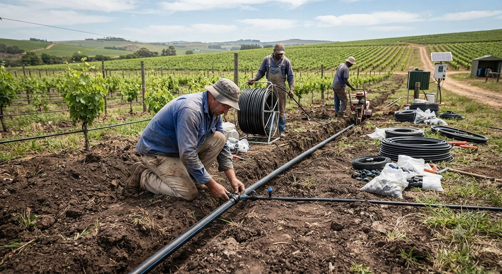
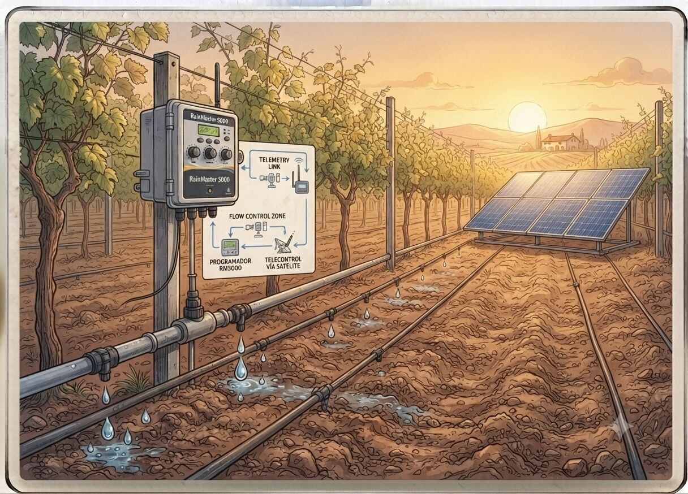

Eficiencia energética e hídrica en la explotación
Menos agua disponible, más coste de energía: rediseñamos el riego y el consumo energético para que la explotación siga siendo rentable.


Un problema que ya no se puede posponer
La combinación de sequía estructural y encarecimiento de la energía ha puesto en jaque la viabilidad de buena parte del regadío valenciano. Cada vez es más habitual que el coste de bombeo y de la factura eléctrica pese tanto en la cuenta de resultados como el propio precio del agua. A esto se suma la exigencia creciente, también desde fondos europeos como el PERTE de Digitalización del Ciclo del Agua, de avanzar hacia un riego más eficiente y monitorizado.
Muchas explotaciones siguen regando con criterios de hace 20 años, sin telecontrol ni datos reales de humedad de suelo, y sin haber valorado el autoconsumo solar para reducir la factura de bombeo.
Qué incluye el servicio
- Auditoría de consumo de agua y energía de la instalación de riego y bombeo.
- Rediseño de sistemas de riego localizado y programación por sondas de humedad.
- Proyectos de autoconsumo fotovoltaico para bombeo, frigoríficos de campo o naves.
- Telecontrol y automatización de riego, con posibilidad de gestión remota.
- Apoyo en la solicitud de ayudas y subvenciones para modernización de regadíos.
- Estudio de viabilidad económica de cada mejora antes de invertir.
🤖 Simulador con IA
Estima en segundos el ahorro anual y el plazo de retorno de una mejora de riego o una instalación solar, a partir de tu consumo y precio actual de la energía.
Probar simulador de retornoPreguntas frecuentes
¿Merece la pena instalar placas solares para el riego si mi consumo no es muy alto?
Depende del consumo, las horas de bombeo y el precio actual de la energía. El simulador orientativo de la web da una primera estimación de ahorro y plazo de retorno antes de decidir si conviene un estudio completo.
¿El telecontrol de riego sirve para explotaciones pequeñas?
Sí, existen soluciones escalables según el tamaño de la parcela y el presupuesto; no es exclusivo de grandes explotaciones.
¿Hay ayudas para modernizar el riego o instalar autoconsumo?
Sí, existen líneas de ayuda autonómicas y europeas, como el PERTE de Digitalización del Ciclo del Agua, para este tipo de inversiones. Apoyamos en la preparación de la documentación técnica necesaria.
¿Cuánto se puede ahorrar realmente cambiando el sistema de riego?
Varía mucho según el estado actual de la instalación y el cultivo, pero los ajustes de programación y sondas de humedad suelen dar un ahorro de agua y energía significativo sin necesidad de grandes obras.